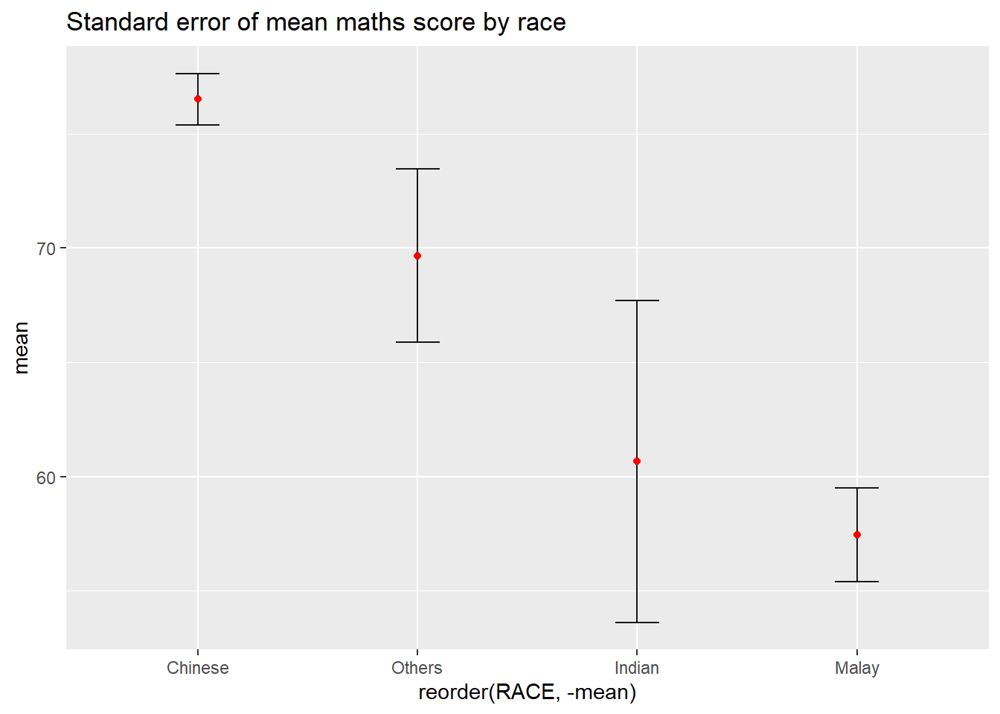
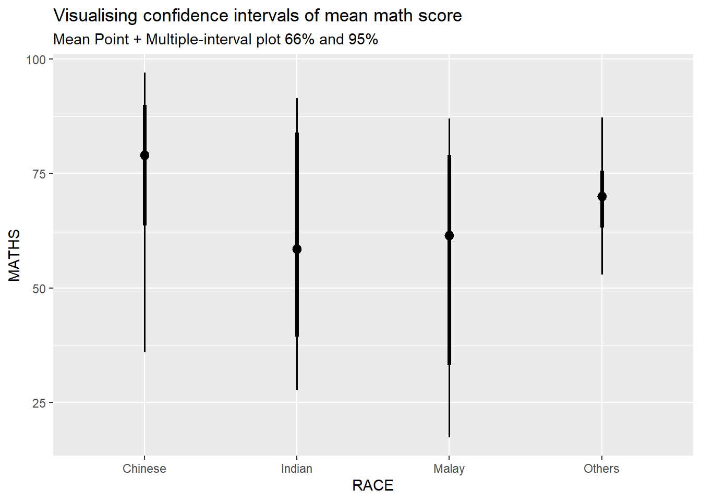
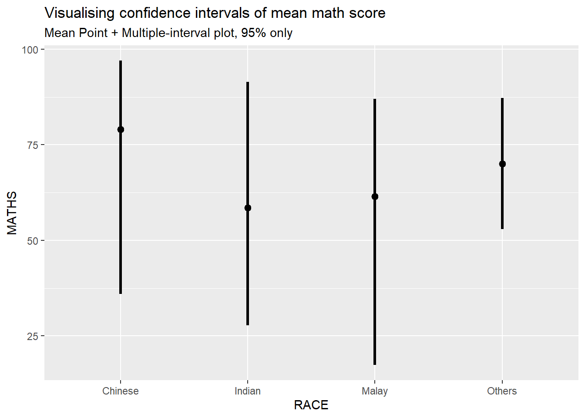
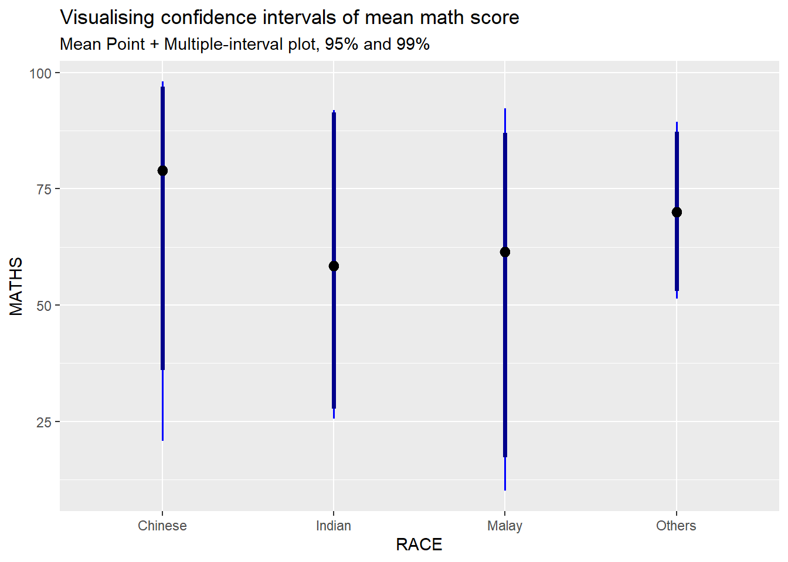
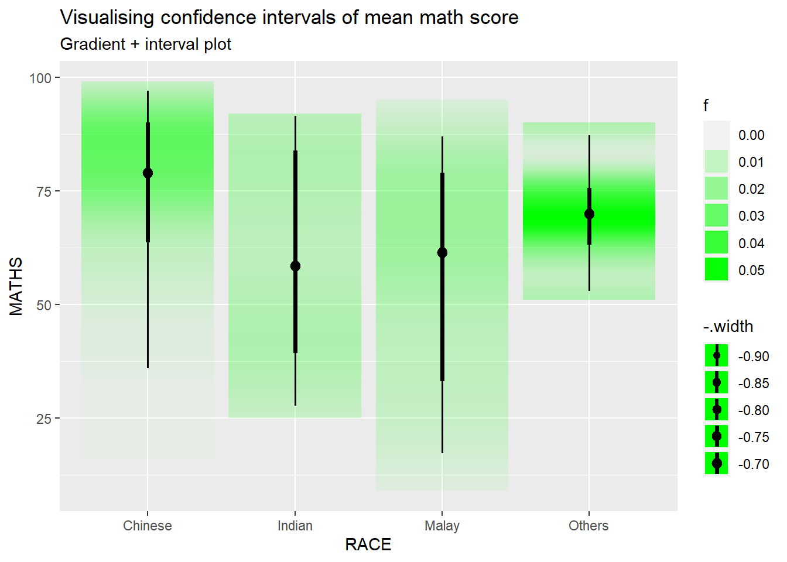
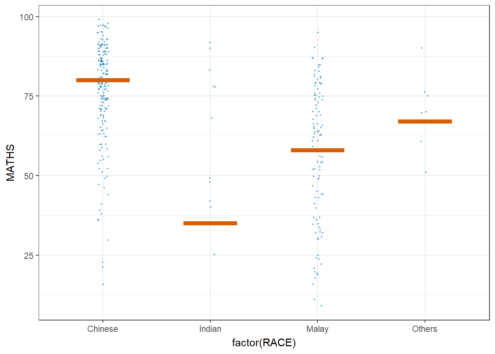

pacman::p_load(tidyverse, plotly, crosstalk, DT, ggdist, gganimate, ggiraph)Hands-on_Ex06
10 Visualising Uncertainty
10.1 Learning Outcome
10.2 Visualizing the uncertainty of point estimates (Manual Method, without ggdist package)
- A point estimate is a single number, such as a mean.
Uncertainty is expressed as standard error, confidence interval, or credible interval
Important
Don’t confuse the uncertainty of a point estimate (mean, median..) with the variation in the sample (standard deviation sigma, and variation sigma square etc).
The standard deviation measures the variation of the values from the mean of ONE sample.
The standard error is the standard deviation of both sides of the ‘mother of all means’ of all the sample means. <- refer lecture 4 slide 23
DT provides an R interface to the JavaScript library DataTables that create interactive table on html page.
Crosstalk is an add-on to the htmlwidgets package. It extends htmlwidgets with a set of classes, functions, and conventions for implementing cross-widget interactions (currently, linked brushing and filtering).
ggdist is an R package that provides a flexible set of
ggplot2geoms and stats designed especially for visualizing distributions and uncertainty.Lets load the student exam data.csv
exam <- read_csv('C:/yixin-neo/ISSS608-VAA/Hands-on_Ex/Hands-on_Ex05/data/Exam_data.csv')10.2.1 Visualizing the uncertainty of point estimates: Manual calculation and creating of my_sum table
The code chunk below performs the followings:
group the observation by RACE,
computes the count of observations, mean, standard deviation and standard error of Maths by RACE, and
save the output as a tibble data table called
my_sum.my_sum <- exam %>% group_by(RACE) %>% summarise(n=n(), mean=mean(MATHS), sd = sd(MATHS)) %>% mutate(se=sd/sqrt(n-1)) #<<< standard error formula
Refer to lecture 4 slide 20 for mathematical formula explanation.
my_sum is specially created for visualisation later using ggplot2.
knitr::kable(head(my_sum), format = 'html')| RACE | n | mean | sd | se |
|---|---|---|---|---|
| Chinese | 193 | 76.50777 | 15.69040 | 1.132357 |
| Indian | 12 | 60.66667 | 23.35237 | 7.041005 |
| Malay | 108 | 57.44444 | 21.13478 | 2.043177 |
| Others | 9 | 69.66667 | 10.72381 | 3.791438 |
10.2.2 Visualizing the uncertainty of point estimates: Use my_sum table and ggplot2 methods to plot uncertainty
The code chunk below is used to reveal the standard error of mean maths score by race. It shows one standard deviation away from the ‘mother of all means’ for all the means from all the samples.
Note
Standard error is a measure of the variation of the mean of all the means from all samples of an underlying distribution.
Code
ggplot(my_sum) +
geom_errorbar(aes(x=RACE,
ymin=mean-se,
ymax=mean+se),
width = 0.2,
colour = 'black',
alpha = 0.9,
size=0.5) +
geom_point(aes(x=RACE,
y=mean),
stat = 'identity', #<<< actual points refer to mean
color='red',
size = 1.5,
alpha = 1) +
ggtitle('Standard error of mean maths score by race')
Note
In the code above, stat = 'identity' means that the y values in the geom_point layer correspond to the actual values in the data frame, rather than a summary statistic like mean or median.
10.2.3 Visualizing the uncertainty of point estimates: ggplot2 methods
Lets plot a 95% confidence interval of mean maths score by race. The error bars should be sorted by the average maths scores. (Refer to take-home ex 1 on sorting by mean)
Code
ggplot(my_sum) +
geom_errorbar(aes(x=reorder(RACE,-mean), # reorder(x,y) means to reorder x based on increasing or decreasing values of y. To sort by descending values of Y, use -Y.
ymin=mean-1.96*se, #<<<< formula to calc 95% CI
ymax=mean+ 1.96*se), #<<<<
width = 0.2,
colour = 'black',
alpha = 0.9,
size=0.5) +
geom_point(aes(x=RACE,
y=mean),
stat = 'identity', #<<< actual points refer to mean
color='red',
size = 1.5,
alpha = 1) +
ggtitle('95% confidence interval of maths score by race')
Note
What is the difference between standard error plot above and this 95% confidence interval plot?
Earlier , we plot error bars of 1 standard deviation away from the mother of all means.
Here, we are plotting 1.96 * standard deviation away from the mother of all means. The higher the % CI, the greater the margin or error.
10.2.4 Visualizing the uncertainty of point estimates with interactive error bars
Task: Plot an interactive error bars for the 99% confidence interval of mean maths score by race., and add the source data table on the right. Table and plot have coordinated views.
Recall in hands-on 3 that we create can create interactive plots using ggiraph and ggplot geometries that can understand 3 arguments; namely tooltip, data_id and onclick.
I will use one of them methods (geom_errorbar_interactive with girafe) to construct here. The other method is to use plotly.
STEP 1: CREATE INTERACTIVE ERROR BAR for 99% CI
Code
# create a new column tooltip to contain the tooltip text.
my_sum$tooltip <- c(paste0("RACE: ",
my_sum$RACE,
"\n N= ",
my_sum$n,
"\n Ave Score: ",
round(my_sum$mean, digits=2)
))
p <- ggplot(my_sum) +
geom_errorbar_interactive(aes(x=reorder(RACE,-mean),
ymin=mean-2.58*se, #<<<< formula to calc 95% CI
ymax=mean+ 2.58*se,
tooltip=tooltip),
width = 0.2,
colour = 'black',
alpha = 0.9,
size=0.5) +
geom_point(aes(x=RACE,
y=mean),
stat = 'identity', #<<< actual points refer to mean
color='red',
size = 1.5,
alpha = 1) +
labs(title='99% confidence interval of maths score by race',
x = 'Race') +
theme(axis.title.y=element_text(angle = 0,
vjust=0.9),
axis.text.x = element_text(angle = 45, hjust = 1),
axis.title = element_text(face = "bold"),
axis.line = element_line(size = 0.2))
girafe(ggobj = p,
width_svg = 8,
height_svg = 8*0.618)STEP 2: CREATE AN INTERACTIVE DATA TABLE USING DT()
- We use the
%>%operator to pipe the data frame into themutate_if()function, where we specify the conditionis.numericto select only the numeric columns. We use the tilde~symbol to specify the rounding function, and pass thedigitsargument to round to two decimal places. The resulting data framedfwill have all numerical columns rounded to two decimal places.
Code
# Round all numerical columns to two decimal places
my_sum <- my_sum %>%
mutate_if(is.numeric, ~ round(., digits = 2))
DT::datatable(my_sum, class='compact')STEP 3: COMBINE BOTH
Next, combine uncertainty graph and plotly interactive table using Crosstalk, which is an add-on to the htmlwidgets package. It extends htmlwidgets with a set of classes, functions, and conventions for implementing cross-widget interactions (currently, linked brushing and filtering).
(Refer to hands-on 3)
The datatable is linked to the visualisation on the left. Click on multiple rows to filter according.
Code
# Use highlight_key() to add a unique key to the data frame my_sum3 so that it can be linked to interactive plots later
d <- highlight_key(my_sum)
p <- ggplot(d) +
geom_errorbar(aes(x=reorder(RACE,-mean),
ymin=mean-2.58*se, #<<<< formula to calc 95% CI
ymax=mean+ 2.58*se),
width = 0.2,
colour = 'black',
alpha = 0.9,
size=0.5) +
geom_point(aes(x=RACE,
y=mean),
stat = 'identity', #<<< actual points refer to mean
color='red',
size = 1.5,
alpha = 1) +
labs(title='99% confidence interval of maths score by race',
x = 'Race') +
theme(axis.title.y=element_text(angle = 0,
vjust=0.9),
axis.text.x = element_text(angle = 45, hjust = 1),
axis.title = element_text(face = "bold"),
axis.line = element_line(size = 0.2))
# Convert ggplot to an interactive plotly plot using the ggplotly(), "plotly click" specifies that highlight should be based on click
gg <- highlight(ggplotly(p),
"plotly_selected")
crosstalk::bscols(list(width = 7,gg),
list(width=5,DT::datatable(d)),
widths=5)
7
5
My mistakes on the attempt to produce this plot:
- Did not use d in ggplot(d) and datatable(d) in crosstalk. As a result, the plot and table were both not able to communicate with each other.
- Wrongly added
geom_errorbar_interactive(aes(tooltip)andgirafetogether withplotlyandcrosstalk::bscols. As as result, no error bars were seen.
10.3 Visualising Uncertainty: ggdist package
ggdist is an R package that provides a flexible set of ggplot2 geoms and stats designed especially for visualising distributions and uncertainty.
It is designed for both frequentist and Bayesian uncertainty visualization, taking the view that uncertainty visualization can be unified through the perspective of distribution visualization:
for frequentist models, one visualises confidence distributions or bootstrap distributions (see vignette(“freq-uncertainty-vis”));
for Bayesian models, one visualises probability distributions (see the tidybayes package, which builds on top of ggdist).

10.3.1 Visualizing the uncertainty of point estimates: ggdist methods
In the code chunk below, stat_pointinterval() of ggdist is used to build a visual for displaying distribution of maths scores by race.
stat_pointinterval means points and multiple intervals. The default confidence interval us 95%. To change the level to 99%, add conf.level = 0.99 to stat_pointinterval function.
Take note that the default .width values are set to c(0.66, 0.95) confidence intervals.
Code
exam %>%
ggplot(aes(x=RACE, #<< plot the base layer
y=MATHS)) +
stat_pointinterval() + #<< .width=c(0.66,0.95)
labs(
title='Visualising confidence intervals of mean math score',
subtitle = "Mean Point + Multiple-interval plot 66% and 95%")
Some of the arguments (there are many , have to read the syntax reference for more details)
.width: For intervals, the interval width as a numeric value in[0, 1]. For slabs, the width of the smallest interval containing that value of the slab.point_interval: This function determines the point summary (typically mean, median, or mode) and interval type (quantile interval,qi; highest-density interval,hdi; or highest-density continuous interval,hdci)Code
exam %>% ggplot(aes(x = RACE, y = MATHS)) + stat_pointinterval(.width = 0.95, .point = median, .interval = qi) + labs( title = "Visualising confidence intervals of mean math score", subtitle = "Mean Point + Multiple-interval plot, 95% only")
10.3.2 Visualizing the uncertainty of point estimates: ggdist methods
Task: Makeover the plot on previous slide by showing 95% and 99% confidence intervals.
Code
exam %>%
ggplot(aes(x = RACE, y = MATHS)) +
#Using stat_pointinterval to plot the points and intervals
stat_pointinterval(.width = c(0.95,0.99),
.point = median,
.interval = qi,
aes(interval_color=stat(level)),
show.legend = FALSE) +
#Defining the color of the intervals
scale_color_manual(
values = c("blue", "darkblue"),
aesthetics = "interval_color") +
#Title, subtitle, and caption
labs(
title = "Visualising confidence intervals of mean math score",
subtitle = "Mean Point + Multiple-interval plot, 95% and 99%")
Note
stat(level) calculates the confidence interval limits based on the specified conf.level argument, and interval_color maps the calculated interval color to the interval_color argument.
10.3.3 Visualizing the uncertainty of point estimates: ggdist methods
In the code chunk below, stat_gradientinterval() of ggdist is used to build a visual for displaying distribution of maths scores by race.
Code
exam %>%
ggplot(aes(x = RACE,
y = MATHS)) +
stat_gradientinterval(
fill = "green",
show.legend = TRUE
) +
labs(
title = "Visualising confidence intervals of mean math score",
subtitle = "Gradient + interval plot")
10.4 Visualising Uncertainty with Hypothetical Outcome Plots (HOPs)
Step 1: Installing ungeviz package
#devtools::install_github("wilkelab/ungeviz")library(ungeviz)What are HOPs? Rather than showing a continuous probability distribution, Hypothetical Outcome Plots (or HOPs) visualize a set of draws from a distribution, where each draw is shown as a new plot in either a small multiples or animated form.
Explanation of the code below:
The code is creating a ggplot object to visualize the distribution of MATHS scores for different races in the exam dataset using the geom_point() and geom_hpline() functions from ggplot2.
Specifically, it is creating a scatterplot (geom_point()) of MATHS scores against RACE with some jitter (position_jitter()) added to the points to avoid overplotting. The factor() function is used to convert the RACE variable to a categorical variable.
Additionally, a horizontal line (geom_hpline()) is added to the plot to represent the median MATHS score for each race, calculated using sampler() function with 25 samples drawn from the original dataset for each race. The line is colored in #D55E00.
The transition_states() function is used to create an animation by specifying the .draw column as the states for the animation. The animation has 3 states (1, 2, 3) and will animate the plot with a transition between each state.
Finally, the theme_bw() function is used to set the theme of the plot to a black and white color scheme.
Code
ggplot(data = exam,
(aes(x = factor(RACE), y = MATHS))) +
geom_point(position = position_jitter(
height = 0.3, width = 0.05),
size = 0.4, color = "#0072B2", alpha = 1/2) +
geom_hpline(data = sampler(25, group = RACE), height = 0.6, color = "#D55E00") +
theme_bw() +
# `.draw` is a generated column indicating the sample draw
transition_states(.draw, 1, 3)
A jitter plot is a variant of the strip plot with a better view of overlapping data points, used to visualise the distribution of many individual one-dimensional values. The values are plotted as dots along one axis, and the dots are then shifted randomly along the other axis, which has no meaning in itself data-wise, allowing the dots not to overlap.